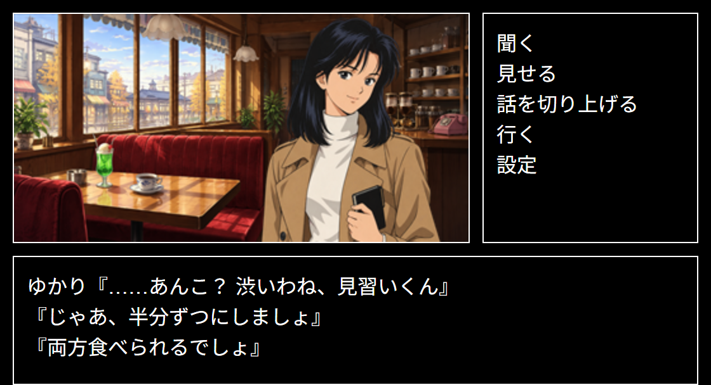

遊び方
どの作品も、同じ操作で遊べます。マウスでもタッチでも操作できます。
画面の見方

1 2 3- 場面の絵：いまいる場所です。人と話しているときは、その人も表示されます。
- コマンド：ここから行動を選びます。
- メッセージ：行動の結果や会話が表示されます。
コマンドを選ぶ
「調べる」「聞く」「行く」などのコマンドを選ぶと、調べる物や聞く話題、行き先の一覧が出ます。その中から選ぶと、結果がメッセージに表示されます。コマンドの種類は、作品や場面によって変わります。
一覧の点線より下には、持ち歩いている物など、どの場面でも出てくる項目が並びます。
キャンセル
一覧が出ているときに、コマンド欄の空いているところをクリック（タップ）すると、キャンセルして元のコマンドに戻ります。「行く」の一覧では「やめる」でもキャンセルできます。
人と話す
人と話している間は、「聞く」「見せる」など、会話のためのコマンドになります。会話を終えるときは「話を切り上げる」を選びます（作品によっては「聞く」の一覧の中にあります）。
メッセージを読む
文字が表示されている途中でメッセージ欄をクリックすると、残りがすぐに表示されます。「▼」が出ているときは、メッセージ欄をクリックすると続きに進みます。
メッセージを最後まで読むまで、コマンドは灰色になって選べません。
セーブ・ロード
「設定」の「セーブ」で、3つの枠のどれかに保存できます。続きは「設定」の「ロード」か、タイトル画面の「つづきから」で遊べます。
セーブデータはお使いのブラウザの中に保存されます。別のブラウザや端末には引き継げません。また、ブラウザの閲覧履歴やサイトのデータを消すと、セーブデータも消えます。
文字の速さ
「設定」の「文字の速さ」で、メッセージが表示される速さを Slow・Normal・Fast・Instant から選べます。選んだ速さは作品ごとに記憶されます。
音楽
画面の右上の「🔊」で、音楽のオン・オフを切り替えられます。「🔇」のときは音が出ません。
別のサイトから来たときなどは、ブラウザの仕組みにより、最初は音楽が鳴らないことがあります。画面をクリック（タップ）すると鳴り始めます。
困ったときは
先に進めなくなったら、まだ行っていない場所や、まだ話を聞いていない人を当たってみてください。同じ人でも、新しいことを知った後には、別の話が聞けることがあります。